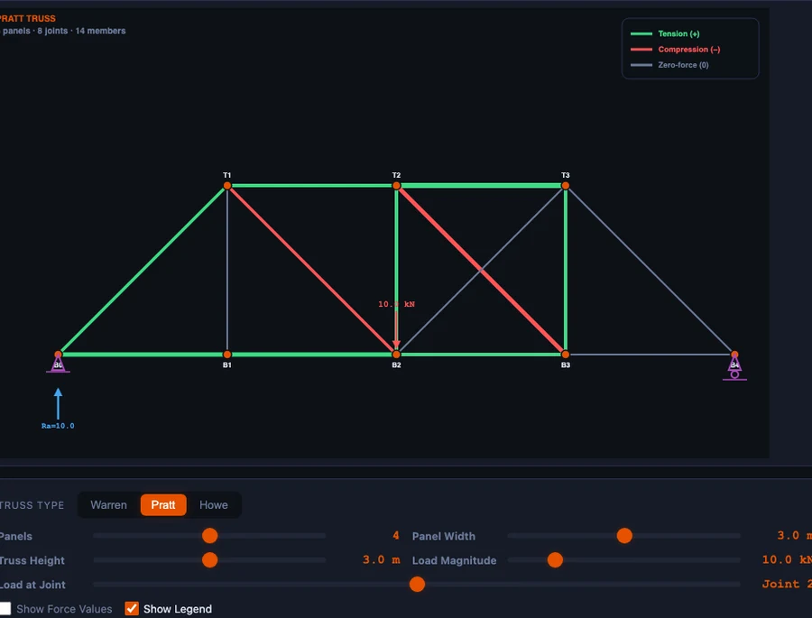

Truss Analysis Made Simple — Method of Joints Explained with a Visual Simulator

- The method of joints isolates each joint and applies ΣFx = 0 and ΣFy = 0, solving two unknown member forces at a time; start at a joint with no more than two unknowns and work across the truss.
- Find support reactions first from global equilibrium (ΣFx = 0, ΣFy = 0, ΣM = 0), then assume every member is in tension: a positive result confirms tension, a negative result means compression.
- Warren, Pratt and Howe trusses share the same support reactions under the same load but differ in internal forces, and zero-force members carry no load yet brace the structure for other load cases.
Here is a scene that repeats itself every semester. The first truss problem on the statics exam is straightforward. The second is straightforward. By the third problem half the class has quietly given up — not because the method of joints is hard, but because there is no way, on paper, to check whether an answer is right until the marker returns it two weeks later. By then the student has already moved on, and the mistake quietly becomes a habit.
A free truss analysis simulator shortens that feedback loop to about three seconds. Pick a truss type. Apply a load. Read every member force, tension or compression, with support reactions labelled. Work the problem on paper, then check the simulator. If the numbers disagree, you find out immediately which joint you got wrong — not two weeks from now, but in the same minute.
Why Trusses Matter — and Why Students Struggle with Them
Trusses are everywhere: roof structures, railway bridges, tower cranes, transmission pylons, stadium roofs, aircraft wings. They are efficient because every member carries only axial load — pure tension or pure compression, no bending, no shear. That efficiency is also what makes them solvable with a ruler and a pen, which is exactly why every statics course spends a fortnight on them.
The struggle usually lives in three places. First, students cannot visualise which way a member is pushing or pulling — arrows on a paper free body look the same whether a bar is being stretched or squashed. Second, they forget the golden rule: start at a joint with only two unknowns, and get tangled in joints with three or more. Third, the sign convention — “positive means tension” — feels arbitrary until they have used it enough times to trust it.
All three are feedback problems. Visualisation is feedback. Joint ordering is feedback. Sign intuition is feedback. A simulator that colours tension green and compression red, and shows every member force with a live number, removes the delay that made the topic feel mysterious in the first place.
The Method of Joints in Four Steps
Every textbook truss problem follows the same recipe. Memorise it once and every problem becomes a mechanical procedure.
- Find the support reactions. Treat the entire truss as a single rigid body. Sum moments about one support to find the reaction at the other, then sum vertical forces to find the first. This step is pure global statics — no joints involved yet.
- Pick a starting joint. You need a joint with only two unknown member forces. A pin support with two members attached is usually the right place to begin. From there you can propagate across the structure.
- Apply ΣFx = 0 and ΣFy = 0. Assume every unknown member is in tension (draw the force arrow pulling away from the joint along the member axis). Two equations, two unknowns, solve the linear system.
- Move to the next joint. Use the member forces just found as known inputs. Each new joint must now contain no more than two remaining unknowns. Repeat until every member is solved.
The sign convention is the easiest thing to forget and the easiest to fix. Positive result → tension; negative result → compression. That is the entire rule. The simulator shows tension in green and compression in red, so any disagreement between paper and screen immediately points to the joint where the error crept in.
\[\sum F_x = 0 \quad \text{and} \quad \sum F_y = 0 \qquad \text{(every joint, every time)}\]
Warren, Pratt, Howe — Three Geometries, Three Behaviours
The simulator ships with three standard truss types. On a diagram they look superficially similar. Under load, their internal force distributions are anything but.
Warren Truss
Alternating diagonals, no vertical members. Elegant, lightweight, instantly recognisable — the classic bridge truss. Under a central downward load, the diagonals alternate between tension and compression along the span. Load a Warren preset with a central 20 kN load (as in the hero image above) and watch the colour flip joint by joint. The top chord compresses, the bottom chord tensions, the diagonals alternate.
Pratt Truss
Verticals plus diagonals that slope inward toward the centre. Under gravity loading the diagonals end up in tension — perfect for slender steel members, which are strong in tension but prone to buckling in compression. The verticals take the compression. That single behaviour is why Pratt trusses dominated steel railway bridges in the late 19th century and why they are still the default choice for long-span steel roof trusses today.
Howe Truss
Same geometry as a Pratt but with the diagonals mirrored — they slope outward from the centre. Now the diagonals carry compression and the verticals carry tension. Historically chosen where diagonals were timber (strong in compression) and verticals were steel rods (strong in tension). Same external loads, mirrored internal forces — the simulator shows the swap in a single click.
Toggle between the three with the same load, the same panel count, the same geometry. The support reactions do not change. The member forces do. That one side-by-side comparison is worth an entire lecture on why truss geometry exists as an engineering choice rather than an aesthetic one.
Zero-Force Members — Free Information
Before plugging anything into equations, scan the truss for zero-force members. They are free information, and they dramatically simplify the remaining work. Two rules cover almost every examination case.
- Rule 1. At an unloaded joint where only two non-collinear members meet, both members carry zero force. Neither can balance the other unless both are zero.
- Rule 2. At an unloaded joint where three members meet and two of them are collinear, the third member (the one sticking out on its own) is a zero-force member.
Load a Warren preset with six panels, look for an unloaded internal joint, and one of the members will be the zero-force one. Remove it from your mental model and the rest of the truss still balances. Identifying these members first turns a 15-bar truss into a 12-bar problem — three fewer equations to solve, three fewer places to make mistakes.
Zero-force members are not pointless. They exist for stability under other load cases — wind from the opposite direction, unbalanced snow, a truck parked on the wrong panel, earthquake loading. The simulator analyses one load case at a time, but the students should leave the lesson knowing that those members earn their keep in the real world.

A Worked Example You Can Verify in Thirty Seconds
Take a 4-panel Warren truss with panel width 3 m and height 3 m (so every diagonal sits at 45°). Apply a single 10 kN downward load at the centre top joint. Supports: pin on the left, roller on the right. By symmetry each reaction is 5 kN upward — no moment sum required.
Start at the left support. Two unknowns meet here: the bottom chord (horizontal) and the diagonal heading up and to the right at 45°. Assume both are in tension.
\[\sum F_y = 0{:}\quad F_{\text{diag}}\sin 45° + 5 = 0 \;\longrightarrow\; F_{\text{diag}} = -5\sqrt{2} \approx -7.07\text{ kN (compression)}\]
\[\sum F_x = 0{:}\quad F_{\text{bottom}} + F_{\text{diag}}\cos 45° = 0 \;\longrightarrow\; F_{\text{bottom}} = +5\text{ kN (tension)}\]
Load the same geometry in the simulator, apply 10 kN at the centre, and both readouts match to the decimal. The diagonal shows red with the number 7.07; the bottom chord shows green with the number 5.0. Walk to the next joint by hand, solve, check again. After four joints a student who was lost at the start of the session now trusts the procedure.
That trust is the real outcome of the exercise. The numbers are secondary. What you are really doing is letting the method of joints stop feeling like a party trick and start feeling like something the student can rely on in an examination.
How to Use the Simulator in a Lesson
Like any tool, the truss simulator is only as effective as the structure placed around it. A few workflows that reliably work for both diploma statics and introductory mechanics.
Geometry comparison (fifteen minutes). Load the same 4-panel truss with identical loads in Warren, Pratt and Howe. Write the tension/compression pattern on the board for each. Ask the class: “If you were designing with timber struts and steel tension rods, which geometry would you choose?” The answer becomes obvious the moment the Howe truss turns green on the verticals.
Paper-then-simulator drill (thirty minutes). Give the class a 3-panel truss and a load. Everyone solves every member by hand, then verifies in the simulator. Misconception catch rate is roughly double what it is with paper alone, because the errors surface in the same lesson rather than in the following week’s homework return.
Zero-force member hunt (ten minutes). Load a 6-panel Warren with a single asymmetric load. Before doing any equations, the class identifies every zero-force member using the two rules. Then they solve the remaining members. Compare against the simulator — if the predictions match, everyone leaves understanding that the rules are not tricks but consequences of equilibrium.
Parametric exploration (fifteen minutes). Fix the panel count and load. Slide the panel height from 1 m to 5 m. Watch the diagonal forces fall as the truss grows taller. Students quickly internalise that a tall, slender truss has low diagonal forces but longer buckling-prone compression members — a real engineering trade-off discovered rather than taught.
For a parallel argument about beams rather than trusses — where bending replaces axial load as the dominant effect — see our guide on drawing shear force and bending moment diagrams. Both articles share the same core teaching point: equilibrium becomes intuitive once the feedback loop is fast enough to trust.
Try It Yourself
All tools below are free — no account, no download. Open them in a browser and start experimenting.
Key Takeaways
- Truss members carry only axial load — tension or compression, never bending or shear. That is what makes them solvable by hand.
- Find support reactions first using global equilibrium, then pick a joint with no more than two unknown members to start the method of joints.
- Assume tension everywhere. A positive answer confirms tension; a negative answer means the member is actually in compression.
- Warren, Pratt and Howe trusses produce the same reactions under the same load but radically different internal force patterns — that difference is what drove historical material choices.
- Zero-force members carry no load in the current case but stabilise the truss under other load cases. Identify them first to shrink the problem.
- The NHIT VisualLab truss tool ships with three truss types, multiple load presets, colour-coded tension/compression visualisation and numeric force readouts on every member — free, in a browser, no login.
Frequently Asked Questions
What is the method of joints in truss analysis?
Isolate each joint, apply ΣFx = 0 and ΣFy = 0, and solve for unknown member forces two at a time. Start at a joint with at most two unknowns (usually a support) and work across the truss joint by joint until every member is determined.
How do I tell whether a member is in tension or compression?
Draw every unknown force pulling away from the joint (the tension assumption). Solve the equilibrium equations. A positive answer means the member really is in tension; a negative answer means it is in compression. The simulator colour-codes tension green and compression red for instant visual confirmation.
What is a zero-force member and why does it exist?
A member carrying no axial load under the current loading. Two rules catch most cases: at an unloaded joint with only two non-collinear members both are zero-force; at an unloaded joint with three members where two are collinear the odd one out is zero-force. They exist for stability and for other load cases (wind, asymmetric live load, seismic).
Warren vs Pratt vs Howe — what is the difference?
External reactions are identical for the same loading, but internal force distributions differ. Warren uses alternating diagonals and no verticals. Pratt has diagonals in tension under gravity (ideal for steel). Howe mirrors the diagonals so they carry compression and the verticals carry tension (historically chosen for timber + steel construction).
How do I calculate support reactions for a simply supported truss?
Apply global equilibrium to the whole truss before starting the method of joints. ΣFx = 0, ΣFy = 0, and ΣM = 0 about one support. A pin + roller combination gives three unknowns (Hpin, Vpin, Vroller), which matches the three equations. For a symmetric load on a symmetric truss, each vertical reaction is simply half the total load.
The method of joints is one of the oldest procedures in structural analysis — and also one of the most rewarding to teach, because the moment it clicks, students can solve problems they could not touch an hour earlier. The obstacle has never been the mathematics. It has been the feedback loop.
Put the simulator on the projector. Draw a truss on the board. Ask the class to predict which members will be in tension before pressing Run. The truss analysis simulator is free and ready when you are — and the first correct prediction usually arrives within ten minutes.